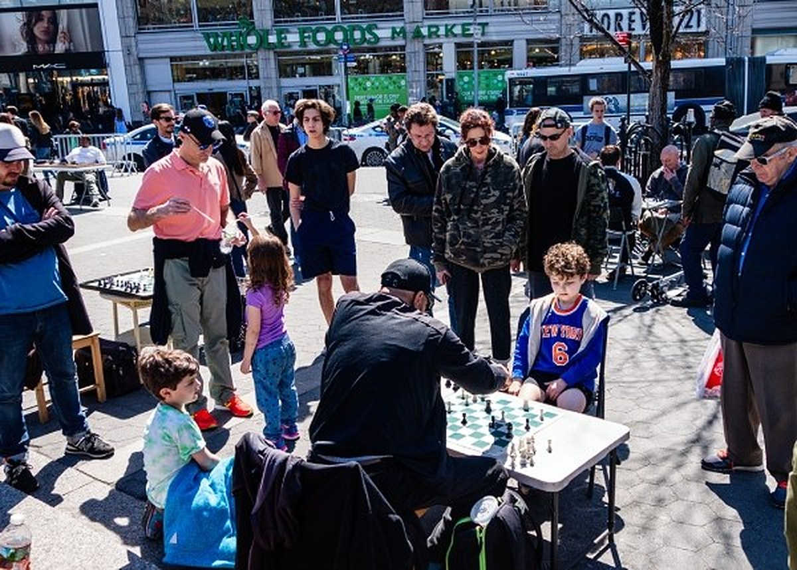
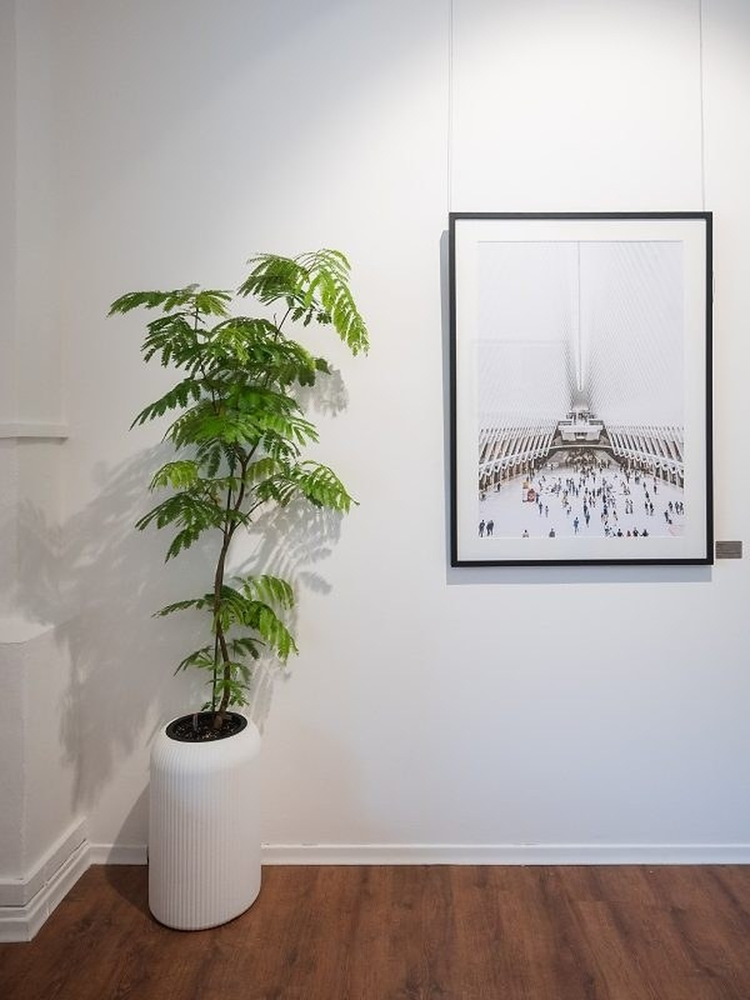

Michael
Gerson
Plate IWomen of Honour, 2025
Masai Village, Tanzania
Photograph
Masai Village, Tanzania
Photograph
On looking
“The first thing I look at is facial expression, movement of the eyes — basically the non-verbal cues.”
Michael Gerson, a practising family psychologist in New York, has photographed strangers for more than five decades.

Plate IIEndgame, 2009
New York
Photograph
New York
Photograph

Plate IIIThe Oculus, 2023
New York City
Photograph, as installed in Shades of Life
New York City
Photograph, as installed in Shades of Life
Collections
25 bodies of work,
indexed by place.